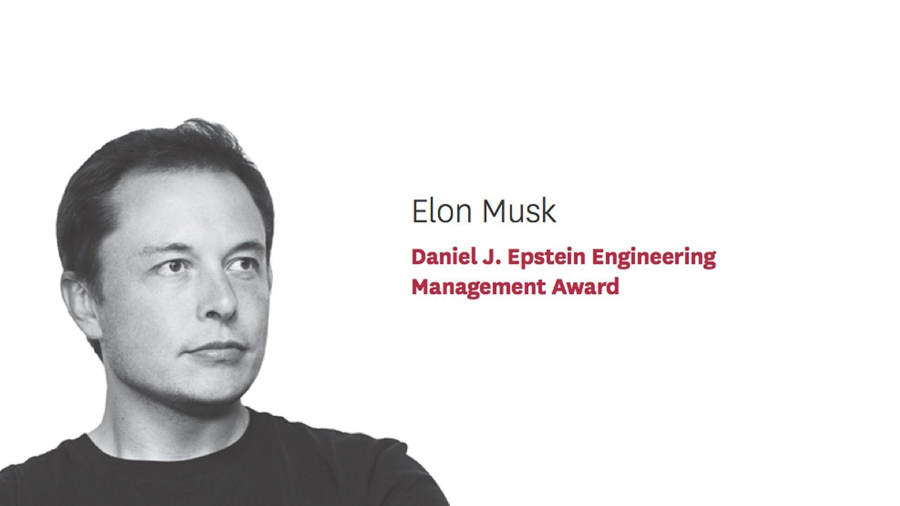

Admirable Qualities
Elon Musk is widely admired for his exceptional leadership qualities, innovative mindset, and relentless drive. Some of his most admirable qualities include:
- Visionary thinking
- Thirst for knowledge
- Immense work ethic
- Willingness to seek feedback
- Resilience and adaptability

Accomplishments
Elon Musk has achieved: Revolutionizing the Electric Car Industry with Tesla , Pioneering Private Space Exploration with SpaceX, and Co-Founding PayPal and Selling it to eBay for $1.5 Billion.

Personal Story
Elon Musk’s personal story is a fascinating journey marked by ambition, innovation, and a relentless pursuit of goals. Born on June 28, 1971, in Pretoria, South Africa, Musk had a somewhat challenging childhood. He was often described as a bookish child, deeply interested in technology, and spent much of his time reading or experimenting with electronics. At age 12, he developed a video game called Blastar and sold it to a computer magazine, showcasing his early knack for programming and entrepreneurship.
